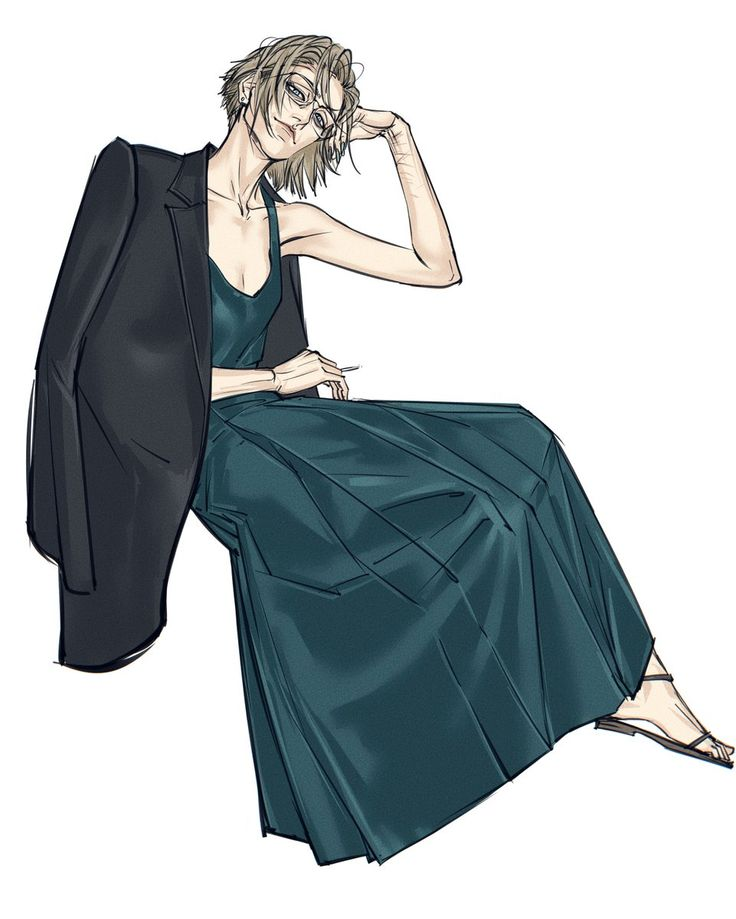
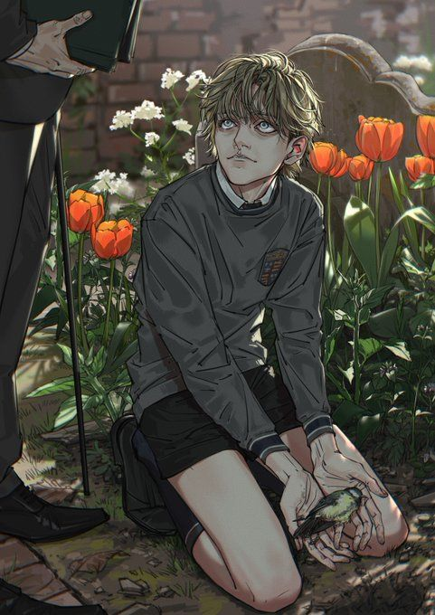
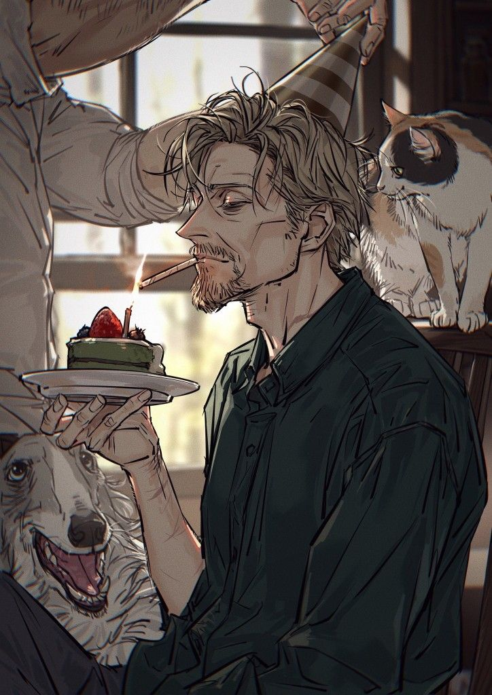
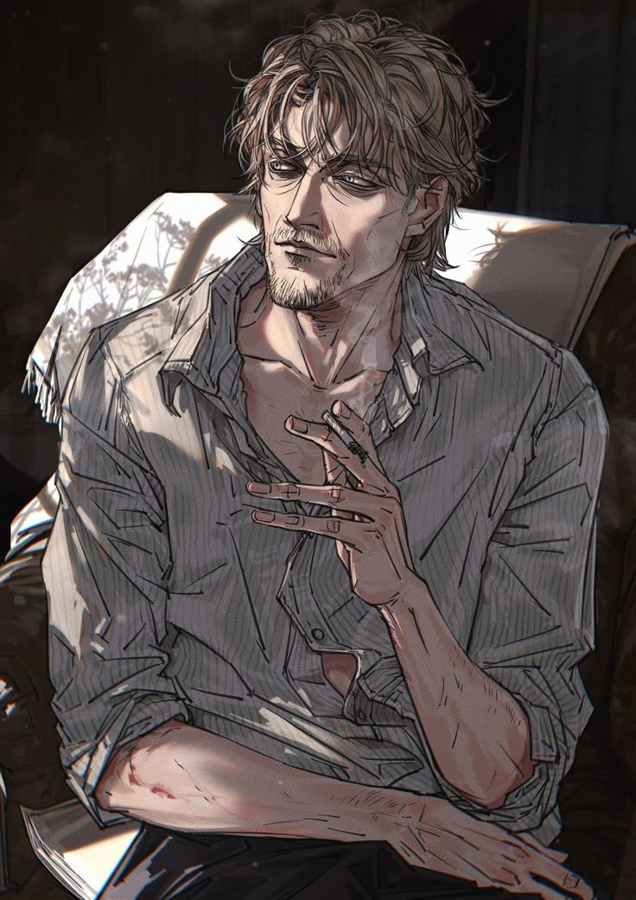
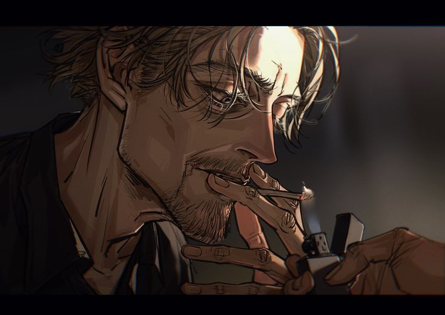
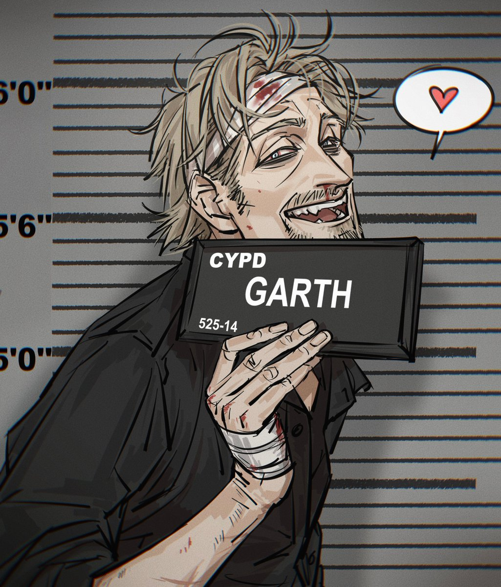
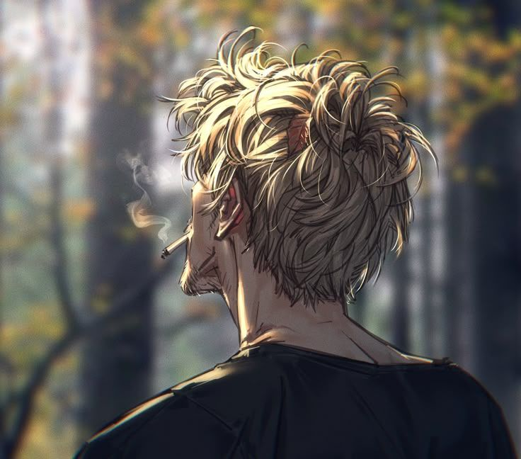
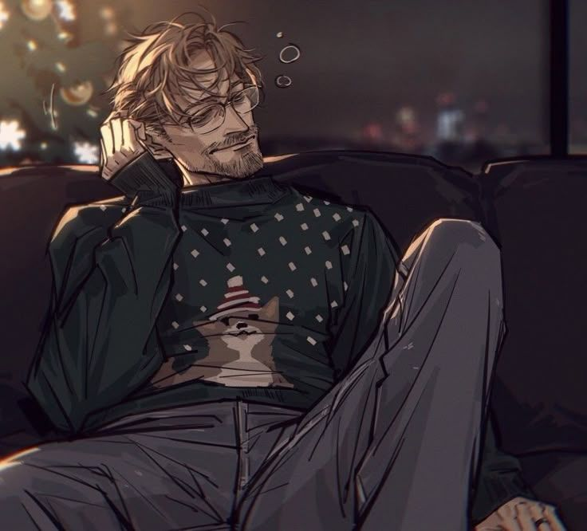
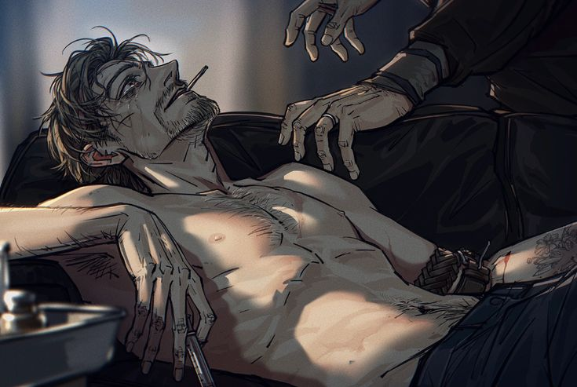
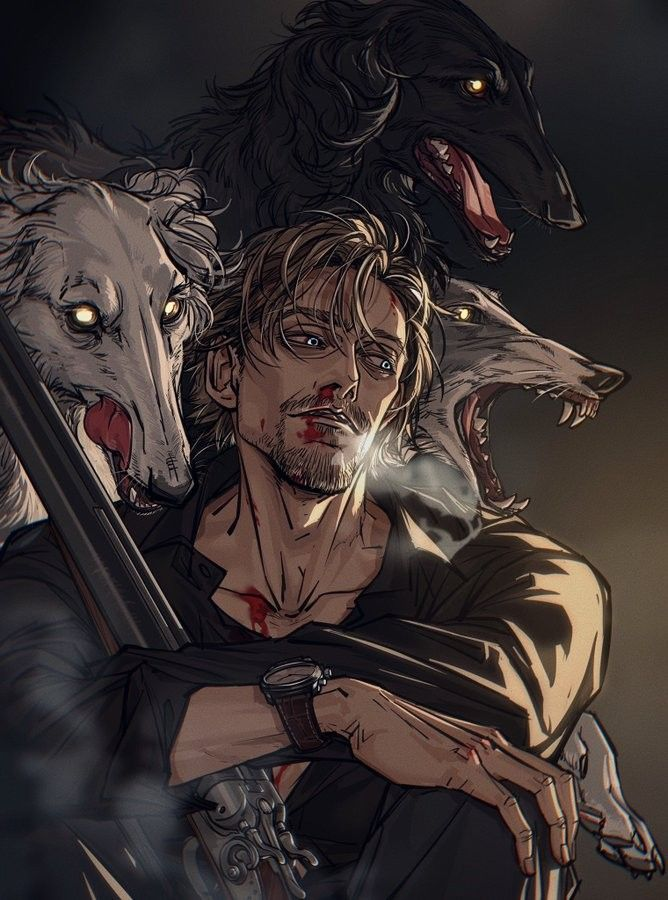

Isaac Nightray était un vampire, comme tant d’autres avant lui dans sa lignée. Un fils parmi une fratrie innombrable, né sous une étoile éteinte, dans une famille dont le nom seul portait la disgrâce. Les Nightray, disait-on, étaient maudits. Maudits par les fautes de leurs ancêtres, par des serments brisés et des pactes non remplis, par des générations d’abandons, de violence et de sang versé sans gloire. Leurs noms n’avaient jamais été chantés, seulement murmurés dans les ruelles où le jour ne va plus. Ils traînaient derrière eux des siècles d’obscurité, de pauvreté crasse, de haines recuites, et de crimes dont personne ne se souvenait vraiment, sinon pour en rappeler la brutalité.
Isaac n’avait pas échappé à cette malédiction. Il en était l’héritier naturel. Il portait sur son visage les cicatrices de l’éducation rude et sans tendresse qu’on lui avait donnée : des coups pour berceuse, des hurlements pour conseils. On l’avait battu pour le former, puni pour le préparer. Et pourtant, dans son esprit tordu, il n’y avait rien d’anormal. À ses yeux, ses bourreaux étaient des guides, des hommes droits, fermes, des figures respectables. Ce qu’il avait subi, il le verrait plus tard comme une preuve d’amour, une manière dure mais juste d’apprendre à survivre. Et comme tant d’enfants brisés, Isaac décida qu’il marcherait sur les mêmes traces que ceux qui l’avaient détruit. Il deviendrait leur reflet. Leur continuité. Une brique de plus dans ce mur de violence légué de père en fils.
PARENT // 02
CASSANDRA
ARLONG
HUMAINE // ARLONG

Il ne voyait pas les femmes comme des égales. Il ne les voyait même pas comme des personnes. Pour lui, elles étaient des choses utiles, des distractions, des soupapes à son besoin de domination. Et dans cette optique, il rencontra un jour Cassandra. Une humaine, au regard un peu trop doux, un peu trop perdu. Elle avait été jolie autrefois, sans doute. Il restait dans ses traits une trace de rêverie qui n’avait jamais su s’épanouir. Elle n’avait jamais essayé de se libérer. Pas vraiment. Elle se contentait de survivre dans des illusions fanées, bercée par des pensées qu’elle n’osait formuler à voix haute. Depuis ses vingt ans, elle s’était noyée dans l’addiction. Non pas une lubie passagère, mais une dévotion totale à tout ce qui pouvait la faire planer, oublier, disparaître.
Sans le sou, elle payait ses doses comme elle le pouvait : en offrant son corps, en vendant les restes de son humanité dans des chambres anonymes. C’est dans l’un de ces lieux sans nom qu’Isaac la trouva. Ou plutôt, qu’il la choisit. Elle lui convenait. Docile. Silencieuse. Et accro. Une cliente parfaite, une compagne commode. Il n’y avait pas d’amour là-dedans. Aucune passion. Aucun frisson. Pas de fleurs offertes ni de mains entrelacées. Juste un contrat entre deux existences en perdition. Isaac ramenait de l’argent, de la drogue, la faisait taire. Elle faisait le ménage, consommait, s’effaçait. Ils vivaient côte à côte comme deux fantômes, deux présences vides partageant un même gouffre.
UNION // -
DESCENDANCE // 05
Puis vinrent les enfants. Pas par désir d’héritage, ni pour transmettre quoi que ce soit. Mais parce que les aides sociales, dans leur ville, étaient plus généreuses pour ceux qui avaient une progéniture. Une bouche à nourrir, disait-on, valait quelques billets. Alors ils en firent. Sans amour, sans attente. Des corps en plus dans une maison trop pleine de silence et de cris.
01VINCENT02MATHIS03PAUL04BAPTISTE05NATHALIE
ET C’EST AINSI
QUE NAQUIT VINCENT.
NON PAS BÉNI. MAIS COMPTÉ.
02 // ENFANCEÂGE // 00 - 11
0-11
L’ENFANCE
NAISSANCE
11 ANS
00 - PREMIERS SOUVENIRS
Vincent est né d’une union sans amour, sans étreinte, sans foi. Il est venu au monde comme on ouvre une porte dans une pièce déjà vide. Un cri de trop dans une maison pleine de silences pesants. Un enfant parmi d’autres, tombé du ventre d’une femme déjà absente, dans les bras d’un homme qui ne savait que frapper. Il n’avait rien demandé, sinon peut-être une once d’attention. Un regard doux. Un mot qui ne griffe pas. Mais dans cette maison-là, les mots étaient des lames, les silences des chaînes.

Ses berceuses étaient des cris, ses leçons, des coups. Il n’y avait pas de livres, ni même de lettres. Il n’avait jamais appris à lire. Il n’avait jamais été à l’école, jamais couru dans une cour de récréation. Il ne connaissait pas les jeux, les cahiers, les anniversaires avec bougies. Rien de ce qui tisse une enfance normale ne l’avait effleuré. Il ne savait que survivre. Respirer le moins fort possible. Ne pas faire de bruit. Ne pas pleurer trop fort.
Même ses frères et sa sœur, nés du même néant, n’étaient pas des alliés. Eux aussi luttaient pour garder la tête hors de l’eau, dans une mer où l’amour n’existait pas. Ils étaient des îles séparées, dérivant dans un même chaos, incapables de se rejoindre. Il n’y avait pas de bras tendus, pas de solidarité. Juste l’épuisement partagé.
Leur repas, unique et maigre, n’était souvent qu’un reste de nourriture. Leurs ventres criaient dans le silence. Leurs corps, trop maigres, trop fragiles, apprenaient à ignorer la faim. L’équilibre ? Une idée abstraite. Ils vivaient penchés, vacillants, toujours à deux doigts de tomber.
Et pourtant, parfois, une chose étrange se produisait. Quelque chose de presque tendre, presque humain. Leur mère, Cassandra, dans un sursaut d’instinct, se redressait. Elle se plaçait entre eux et Isaac. Elle tendait son propre corps amaigri comme un bouclier dérisoire.
Elle levait les mains, pas pour frapper, mais pour arrêter. Pour protéger, peut-être. Un geste fragile, comme une prière. Mais elle n’était pas faite pour le combat. La peau collait à ses os. Ses gestes étaient lents, imprécis. Face à Isaac, cet homme massif, taillé comme un mur, elle n’était qu’un souffle. Et rapidement, elle comprit qu’elle ne pouvait rien changer. Rien sauver.
Alors elle fit comme eux. Elle survécut. Elle s’enfonça plus encore dans les brumes de l’oubli. Sa consommation devint plus régulière, plus urgente. La drogue n’était plus un plaisir, mais un besoin vital. Un anesthésiant contre la honte, la douleur, le dégoût de soi. Elle se piquait pour ne pas hurler. Elle se déconnectait pour ne pas voir. Pour ne pas entendre les sanglots étouffés derrière les murs. Pour ne pas sentir l’odeur du sang et de la peur.
Et Isaac, dans toute sa brutalité aveugle, ne voyait même plus ses absences, ni ses tremblements. Les overdoses devenaient monnaie courante. Elle s’effondrait parfois sur le sol, le regard perdu, l’âme absente. Et lui ? Il passait à côté d’elle comme on contourne une chaise renversée. Sans pitié. Sans inquiétude.
Vincent, lui, voyait tout. Et dans ses yeux d’enfant, se gravaient des images que personne ne devrait porter. Des souvenirs de larmes, de murs trop froids, de soupirs résignés.
IL N’ÉTAIT PAS NÉ POUR VIVRE.
IL ÉTAIT NÉ POUR ENDURER.
03 // ADOLESCENCEÂGE // 12 - 18
12-18
GRANDIR
SANS VIVRE
12 ANS
16
18 ANS
12 - LA MAISON
À ses douze ans, l’air dans la maison était toujours aussi irrespirable. Rien n’avait changé, sinon le poids croissant du silence, des cris, de la peur. Les jours s’égrainaient, identiques, ternes et tranchants. Les hurlements d’Isaac étaient devenus la bande-son quotidienne, hachée de jurons, de portes claquées, de verre brisé. Et entre deux éclats de rage, on entendait les rires fous, les murmures incohérents de Cassandra. Plongée dans la brume de ses toxines, perdue dans un monde qui n’appartenait qu’à elle, elle parlait à des ombres, récitait des poèmes sans queue ni tête, riait aux anges qu’elle seule voyait. Sa folie, qui avait commencé comme un murmure, s’était changée en une mélodie grinçante, insupportable, qui finissait par agacer même Isaac. Et à chaque fois qu’elle dérangeait l’ordre de son chaos à lui, il la faisait taire à coups de poing. De plus en plus forts. De plus en plus nombreux.
Vincent, comme ses frères et sa sœur, avait appris à se taire. À refouler les larmes, à respirer le moins possible. Ils devenaient des ombres dans leur propre maison. Discrets. Effacés. Mais surtout : dociles. Car leur père n’avait pas seulement besoin de corps à frapper. Il avait besoin de mains pour le servir.
12
UTILITÉ // MAIN-D’ŒUVRE
À cet âge, ils devinrent des rouages d’un système sordide. Chacun d’eux, sac sur le dos, descendait dans les rues comme de petits fantômes porteurs de poison. À l’intérieur : des sachets, des pilules, des poudres. Des destinations précises. Un nom, des indications. Une somme à récupérer. Et l’obligation impérieuse de ne pas se tromper. Car la moindre erreur avait un prix. Une dette de chair. Une punition gravée à vif.
Chaque faute, chaque écart, se payait dans la douleur. Et il y en avait, comment auraient-ils put interprêter des chiffres sans les avoir appris ? Le cuir du ceinturon sifflait dans l’air, et la peau se fendait. Isaac ne frappait jamais pour tuer, mais toujours pour marquer. Les entailles qu’il infligeait n’étaient ni profondes ni accidentelles : elles étaient mesurées, calculées, juste assez pour lacérer, jamais assez pour coûter cher en soins. Les cicatrices qu’ils portaient devinrent leur mémoire, leur histoire.
16
RUPTURE // CASSANDRA

Et puis, les choses empirèrent encore. Vincent avait seize ans quand tout bascula. Ce jour-là, la folie de Cassandra franchit une limite invisible. Une provocation de trop, un mot mal placé, ou peut-être rien du tout. Isaac frappa. Un coup sec, précis, d’une violence sourde. À l’arrière du crâne. Et Cassandra s’effondra comme une poupée de chiffon. Sans cri. Sans lutte. Elle ne se releva pas.
Les enfants, figés dans l’encadrement de la porte, assistèrent à la scène, les yeux écarquillés, le cœur en suspens. Aucun mot ne sortit de leurs bouches. Rien, sinon ce silence traumatisé qui laisse l’âme en morceaux. Ce fut une mort simple, rapide, mais inoubliable. Une fin banale, dans un monde qui n’avait jamais permis de rêver.
Le crime fut découvert. Isaac, déjà connu des services de justice, fut arrêté. Encore. Mais cette fois, les enfants restèrent. Cinq âmes écorchées, laissées sans repères, sans adultes, sans avenir. L’État intervint, trop tard, comme souvent. Chacun fut placé dans un foyer différent, dispersé comme les fragments d’un vase brisé.
Et le sort, cruel, poursuivit son œuvre. La petite sœur mourut peu après, rongée par une maladie que personne n’avait pris le temps de diagnostiquer. L’un des frères fut retrouvé sans vie, abandonné entre deux poubelles, la peau glacée, les poches vides. Un autre choisit de se pendre dans une vieille étable, fatigué de lutter contre l’invisible. Le troisième disparut sans laisser de trace. Vincent n’attendait plus de nouvelles. Il savait. Intimement.
-
PLACEMENT // INSTABLE
Par un miracle sans nom, peut-être par obstination, Vincent survécut. Il enchaîna les foyers, toujours mal adapté, toujours un fardeau. Il n’avait pas les codes. Ne savait pas lire. Ni écrire. Ne comprenait pas les règles d’un monde poli. Il mangeait comme un animal affamé. Il dormait peu, et parfois, la nuit, il souillait les draps sans pouvoir s’en empêcher, hanté par des souvenirs d’enfance dans des lits trop sales, partagés à trop nombreux.
Il passait de maison en maison. Sans jamais s’attacher. Sans jamais être accueilli. Il n’y avait plus de coups, certes. Mais il y avait ce vide. Ce vide immense et tranchant qui rongeait ses entrailles. L’absence d’amour était devenue un creux sans fond. Il ne savait pas comment aimer. Ni comment être aimé.
18
STATUT // ADULTE
À dix-huit ans, les portes des foyers se refermèrent. Il était devenu adulte. Aux yeux du système, il n’était plus un enfant brisé, mais un homme inutile. Pas de diplôme. Pas de toit. Pas de futur. Il n’avait plus rien, sinon la rue. La même rue qui l’avait vu grandir, fébrile, invisible.
Ce jour-là, celui où il aurait dû fêter ses dix-huit ans, il se réfugia dans un carton. Un abri dérisoire sous une pluie glaciale.
18 // FIN DE PRISE EN CHARGE
ET C’EST LÀ QUE LA VIE, CONTRE TOUTE ATTENTE,
LUI OFFRIT UNE MAIN.
CONTINUER →
04 // JEUNE ADULTEÂGE // 18 - 27
18-27
UNE MAIN
TENDUE
18 ANS
27 ANS
05 // DETENTION
PLAYBACK // PRISON
00:00 / 00:00
VOL
18 - GAËL
Quoique cette main tendue se révélât n’être, elle aussi, qu’un nouveau poison. Un poison différent des autres, peut-être, de ceux qui sauvent avant de condamner, qui arrachent un homme au froid pour mieux l’enchaîner à une autre forme de misère. Celui qui la lui tendit était un homme déjà marqué par les années, le visage mangé d’une barbe négligée, les vêtements imprégnés de cette même odeur de rue que Vincent traînait désormais avec lui. Ses cheveux humides collaient à son front lorsqu’il lui présenta cette main maigre, presque fragile, comme si elle non plus n’avait plus grand-chose à perdre, et certainement rien à gagner. Cet homme se prénommait Gaël.

Lui aussi avait été élevé par la rue. Peut-être même pouvait-on dire qu’elle l’avait gardé, puisqu’il y vivait encore, réfugié dans une maison que le temps et ses anciens propriétaires avaient abandonnée avant lui. Il n’y avait ni eau courante ni électricité, seulement des murs rongés par l’humidité, quelques meubles recueillis on ne savait où et, surtout, un toit. Gaël avait apprivoisé les ruines comme il avait pu. Des lanternes dispersées ici et là repoussaient timidement l’obscurité, dessinant sur les murs des ombres tremblantes, tandis qu’il tirait sa maigre fortune de la vente de petites gélules et de sachets poudreux. Cette même poudre que Vincent avait autrefois vue disparaître dans les narines de sa mère.
GAËL //
"Un jeune comme toi dans les rues… Quel gâchis."
Gaël le répétait souvent. Il le répétait encore tandis que ses doigts déboutonnaient la chemise de Vincent, puis s’attardaient sur les derniers lambeaux qui habillaient son corps. Ce jour-là, Vincent apprit qu’au sein des rues, même le confort possédait son prix. Alors il accepta. Il accepta comme il avait accepté les coups, comme il avait accepté la mort de sa mère, celle de ses frères, celle de sa sœur. Avec cette neutralité étrange qui ne relevait ni du courage, ni de la résignation, encore moins d’une quelconque sagesse. Vincent ne savait simplement pas donner à son visage une autre expression. Quelque chose en lui semblait avoir cessé depuis longtemps de protester contre ce qui lui arrivait. Le monde décidait, lui demeurait là, au milieu, attendant que cela passe.
En échange, au moins, il eut droit à une chambre. Une chambre à lui, dans cette carcasse de maison. Il y avait un lit, un bureau, quelques murs pour l’isoler du reste et une porte qu’il pouvait refermer. Le bureau ne lui servait à rien. Vincent ne savait ni quoi y écrire ni quoi y déposer. Alors il le regardait simplement vieillir, le bois humide s’affaisser lentement sous le poids des années, comme si le meuble lui-même s’épuisait de continuer à tenir debout. Peut-être était-ce pour cette raison qu’il l’aimait bien.
Vincent, lui, ne rentrait généralement que le soir. Ses journées se dissolvaient dans les rues. Il marchait sans savoir ce qu’il cherchait, poussé davantage par l’impossibilité de rester dans cette maison que par le désir d’atteindre quelque part. Parfois, il s’asseyait dans un coin et observait ceux qui lui ressemblaient. Il comprit ainsi que l’immobilité pouvait, elle aussi, rapporter quelques pièces. Alors il les imita. Assis en tailleur contre un mur, il écoutait les conversations qui ne lui étaient pas destinées, contemplait les silhouettes qui passaient devant lui et, de temps à autre, entre ses jambes croisées, tintait une pièce de bronze. Les jours passant, ces pièces devinrent une petite sacoche.
Vincent ignorait pourtant ce qu’elle valait réellement. Il ne savait pas compter. L’argent n’avait jamais été pour lui qu’une chose abstraite, un objet capable de provoquer la colère de son père, de faire claquer les portes et monter les voix. Il savait seulement que les hommes semblaient lui accorder une importance immense. Alors il le conservait, sans trop savoir pourquoi. Et les jours se ressemblaient. C’était une routine sans véritable douleur parce qu’elle ne contenait aucune véritable attente. Vincent n’avait ni intérêt, ni but, ni ambition. Il existait avec cette simplicité presque tragique des choses qui n’attendent rien du lendemain.
-
PREMIER CONTACT // JADE
Jusqu’au jour où, à la place d’une pièce, quelque chose de vivant tomba entre ses mains. Un bouquet de fleurs. Avec lui vint un sourire enjôleur dont Vincent fut incapable de saisir le sens. La jeune femme qui venait de les lui offrir devait avoir à peu près son âge. Ses vêtements racontaient une pauvreté semblable à la sienne, elle n’appartenait pas davantage que lui aux gens qui marchaient vite, le regard droit, comme s’ils savaient exactement où les conduisait leur existence. Mais elle, elle s’était arrêtée. Elle l’avait vu. Mieux encore : elle l’avait considéré. Vincent porta les fleurs près de son visage et en respira le parfum longtemps après son départ. Il n’avait pas eu le courage, ou peut-être simplement pas les mots, pour répondre à cette étrange salutation. Pourtant, quelque chose avait bougé en lui.
Une chose minuscule. Presque douloureuse. Pour la première fois depuis longtemps, Vincent espéra. Il espéra la revoir. Une fois encore. Et elle revint. Tous les jeudis. À la même heure. Toujours avec ce sourire. Toujours avec quelques fleurs que Vincent, incapable de se résoudre à les jeter, conserva toutes, même lorsqu’elles commencèrent à se faner, puis à sécher, jusqu’à ce que leurs pétales deviennent cassants sous ses doigts. Avec un morceau de craie, il avait d’abord tenté de reproduire les contours de son visage à même le parquet de sa chambre. Puis, avec quelques-unes des pièces accumulées dans sa sacoche, il acheta des feuilles et des crayons. Alors il la dessina. Encore. Et encore.

Elle devint une habitude avant même d’avoir un nom. Une obsession silencieuse installée entre les murs humides de sa chambre. Vincent la dessinait telle qu’il l’avait vue, puis telle qu’il croyait l’avoir vue, puis telle que son imagination commençait à la reconstruire. Les poses changèrent. Les traits se précisèrent. Et, à mesure que Gaël lui enseignait malgré lui une vision plus trouble des corps et de leur valeur, certains dessins devinrent plus suggestifs, contaminés par ce que Vincent apprenait du désir sans jamais qu’on lui en eût expliqué la tendresse. Il n’avait pas les mots. Il n’avait pas les manières. Et personne ne lui avait jamais enseigné les frontières que l’on devait respecter chez autrui. Alors, un jour, il la suivit. De loin d’abord.
Il découvrit l’endroit où elle vivait, un logement aussi piteux que le sien, et observa son existence derrière les fenêtres. Il apprit ses habitudes avec l’application silencieuse d’un enfant qui chercherait à comprendre un phénomène nouveau. Elle fréquentait régulièrement un pub des environs et en ressortait souvent au bras d’hommes dont les vêtements suffisaient à révéler qu’ils possédaient davantage que quelques pièces de bronze au fond d’une sacoche. Parfois, elle disparaissait avec eux dans les chambres d’un motel.
Et les bruits qui traversaient les murs ne laissaient guère de place au doute. Pourtant, Vincent ne ressentit pas le dégoût qu’il aurait peut-être dû éprouver. Il écoutait. Il attendait. Et quelque part dans la confusion de son esprit naissait cette impression dérisoire, presque pathétique, de partager malgré tout quelque chose avec elle. Comme si connaître cette part de son existence revenait déjà à y appartenir un peu. Il lui fallut encore plusieurs longues semaines avant d’oser briser la distance. Lors de l’un de ses passages, sa main se referma autour de son poignet. La jeune femme s’arrêta. Vincent aussi. Il ne savait déjà plus ce qu’il était censé faire maintenant qu’elle se tenait véritablement devant lui. Mais la belle sourit.
JADE //
"Je me demandais quand est-ce que tu allais le faire. Je commençais à perdre espoir."
Peut-être s’était-elle reconnue dans ce regard qu’il posait sur le monde. Peut-être avait-elle aperçu, derrière cette étrange absence qui figeait ses traits, quelque chose qui ressemblait à sa propre solitude. Ou peut-être n’étaient-ils simplement que deux êtres suffisamment perdus pour se reconnaître sans avoir besoin de se comprendre. Elle le guida à travers les rues jusqu’à une usine abandonnée. Là, au milieu du béton froid et des vestiges industriels, elle avait construit son royaume avec presque rien. Un canapé récupéré, quelques affaires entassées, des objets sans valeur disposés de manière à imiter un salon. C’était dérisoire. Misérable, sans doute.
Mais c’était chez elle maintenant qu'elle avait été expulsée de sa demeurre passagère. Mais son véritable trésor tenait dans une petite sacoche. Elle en tira un joint, le coinça entre ses lèvres et l’alluma. La braise rougit dans la pénombre. Elle inspira une première fois, conserva la fumée quelques secondes, puis la relâcha lentement devant elle comme un voile. Ensuite, elle le tendit à Vincent. Et Vincent accepta. Comme toujours. Seulement, cette fois, peut-être avait-il eu envie d’accepter. C’est ainsi qu’il quitta son précédent maître. Gaël ne chercha même pas à le récupérer. Qu’importait. Les rues regorgeaient d’êtres suffisamment seuls, affamés ou brisés pour devenir les chiens dociles de quelqu’un d’autre. Il en trouverait un nouveau.
-
SUBSTANCE // PREMIÈRE EXPOSITION
Vincent, lui, avait déjà trouvé sa nouvelle maîtresse. Elle s’appelait Jade. Et leur alchimie possédait cette évidence terrible que l’on rencontre parfois entre deux catastrophes faites pour se percuter. Jade l’initia à la drogue, puis à l’addiction. Ensemble, ils apprirent à abandonner leurs corps dans un monde qui ne leur avait jamais offert grand chose, pour aller chercher ailleurs des couleurs plus belles. Quelques heures durant, la misère devenait lointaine. Les murs de l’usine semblaient moins froids. Le ventre vide importait moins. Le passé se taisait. Ils se perdaient ensemble dans des paradis artificiels dont le réveil constituait toujours le prix.
Elle fit également de lui un collègue. Sa logique était d’une simplicité cruelle : s’il devait être utilisé, autant être payé pour cela. L’argent, cependant, rendait les hommes plus exigeants. Plus brutaux parfois. Il transformait ce que Vincent avait appris à subir en transaction et, avec la transaction, venait cette illusion dangereuse que celui qui payait achetait davantage qu’un instant. Jade le savait. Elle lui apprit à le savoir aussi. Finalement, Jade n’avait peut-être jamais cherché autre chose qu’une présence capable de partager sa misère sans tenter de la sauver. Et Vincent n’avait rien de mieux à faire que se laisser adopter.
Il lui montra ses dessins. Tous. Les premiers portraits maladroits, les esquisses tracées de mémoire, les visages répétés jusqu’à l’obsession, jusqu’aux représentations plus intimes nées de tout ce qu’il avait observé sans véritablement le comprendre. Jade ne s’en offusqua pas. Peut-être même y reconnut-elle une forme d’affection maladroite, difforme, façonnée par un garçon à qui personne n’avait jamais appris à aimer correctement. Alors ils restèrent ensemble. Deux jeunes gens abandonnés par le monde, réunis moins par l’espoir d’en sortir que par le soulagement de ne plus avoir à s’y perdre seuls.
ET PEUT-ÊTRE, AU FOND,
ÉTAIT-CE MIEUX AINSI.
05 // INCARCÉRATIONÂGE // 27 - 32
27-32
CINQ ANS
DERRIÈRE LES BARREAUX
27 ANS
32 ANS
27 - JADE
Il vécut ainsi de longues années auprès de Jade. Des années à s’aimer, peut-être, si tant est que l’on puisse donner ce nom à leur manière de s’accrocher l’un à l’autre pour mieux sombrer ensemble. Chacun tirait l’autre un peu plus vers le fond, ils étaient leurs naufrages respectifs, deux mains enlacées sous la surface qui, plutôt que de chercher la lumière, s’entraînaient mutuellement vers des abysses toujours plus profonds. Ni l’un ni l’autre ne possédait toutefois la lucidité nécessaire pour comprendre que cette entraide aurait aussi pu servir à remonter. Et pourquoi l’auraient-ils fait, après tout ? Pourquoi quitter le seul monde qui leur permettait encore de rire, de sourire, de supporter quelques heures supplémentaires au sein d’une existence dont ils n’attendaient plus rien ? Ils avaient trouvé dans leur chute une forme de bonheur, aussi misérable et artificiel fût-il, et cela leur suffisait.
Vincent avait désormais vingt-sept ans. Jade, elle, approchait de la trentaine, mais le destin ne lui accorda jamais la chance de l’atteindre. À force de jouer avec la vie elle-même, comme si elle possédait assez de parties à perdre pour ne jamais craindre la dernière, la pauvre finit par s’éteindre sur les genoux de Vincent. Une overdose. Rien de spectaculaire, rien de grandiose, seulement un souffle qui cessa quelque part au milieu de la nuit, tandis que lui-même était trop loin du monde pour comprendre que celui de Jade venait de s’arrêter. Au petit matin, la police traînait dans les environs, mauvais hasard, mauvaise chance, et ce ne fut que lorsque les officiers saisirent Vincent par les bras pour l’emmener qu’il remarqua véritablement l’immobilité de la belle. Elle ne dormait pas. Elle ne respirait plus. Pour la première fois, sa voix trouva une octave qu’elle n’avait encore jamais connue, quelque chose de plus aigu, de plus fragile, presque déchiré par une émotion que son corps semblait découvrir en même temps que lui.
27
JADE // DÉCÉDÉE
Il appelait son nom. Encore et encore. Il craignait sa mort, mais non pas la sienne : celle de Jade. Pour une fois, le trépas cessait d’être cette abstraction lointaine qui avait emporté sa mère, ses frères et sa sœur pour prendre le visage de quelqu’un qu’il avait choisi de garder auprès de lui. Il eut à peine le temps de voir une bâche noire recouvrir son corps allongé que déjà on l’arrachait à elle. On l’emmena au poste, où les interrogatoires succédèrent aux analyses, où l’on attendit de lui des réponses qu’il ne savait pas formuler et des réactions qu’il n’avait jamais appris à offrir. Son cruel manque d’éducation, son absence presque totale de repères et cette étrange apathie partielle qui lui servait depuis l’enfance de rempart contre le monde ne jouèrent guère en sa faveur. Ses silences ressemblaient à de l’indifférence, son visage impassible à celui d’un homme sans remords, et son incapacité à comprendre ce qu’il aurait dû faire cette nuit-là suffisait à le rendre coupable aux yeux de la loi. Non-assistance à personne en danger. Cinq années de prison et 75.000 Galions d’amende. Soit. Qu’importait. Une fois encore, quelqu’un avait décidé de ce qu’il adviendrait de lui, et Vincent n’avait jamais vraiment appris qu’il était possible de s’y opposer.
CONDAMNATION05
ANNÉES
AMENDE75.000
GALIONS
MOTIF
NON-ASSISTANCE
À PERSONNE EN DANGER
Une punition pour beaucoup, sans doute, mais les barreaux furent peut-être la plus belle opportunité que Vincent eût rencontrée jusqu’alors. Il se remit rapidement de la mort de Jade, ou du moins en donna-t-il l’impression. Peut-être son esprit avait-il étouffé toute tristesse avant qu’elle ne devînt assez grande pour le submerger, peut-être avait-il simplement rangé Jade auprès de tous ces morts dont il avait appris, au fil des années, à supporter l’absence, peut-être encore était-ce le déni qui accomplissait silencieusement son œuvre. Il n’en savait rien et ne chercha pas à le savoir. Les programmes de réinsertion occupèrent bientôt suffisamment ses journées pour détourner son esprit de cette question, et ils constituèrent pour lui une véritable clef d’or. Pour la première fois, on lui offrait l’accès à ce dont son enfance l’avait privé : l’éducation. Il apprit les lettres, puis les mots, s’essaya à l’écriture et aux chiffres, les quelques ateliers de jardinage organisés entre les murs de la prison furent également son initiation à la terre et au vivant. Il découvrit qu’une graine minuscule pouvait devenir quelque chose pour peu qu’on lui accordât de l’eau, du temps et de la patience. Ses propres mains, pourtant, ne cessaient de trembler lorsqu’elles manipulaient la terre ou tenaient un crayon. Sur le papier comme entre les feuilles, le manque accompagnait chacun de ses gestes, un poison invisible logé sous sa peau, une faim sans bouche qu’il ne savait ni satisfaire ni faire taire.

Au sein de cette prison, Vincent était d’ailleurs bien loin de faire la loi. On le frappait pour un oui, pour un non, parce qu’il avait respiré trop fort ou parce que son regard s’était attardé sur quelque chose qu’il n’aurait pas dû voir. Il était facile de s’en prendre à lui : maigrelet, maladroit, dépourvu des codes sociaux les plus élémentaires, incapable de discerner une menace avant que celle-ci ne se transforme en coup, il avait tout d’une proie idéale. Pourtant, ces violences ne l’endurcirent pas davantage qu’elles ne le démolirent. Elles ne façonnèrent rien en lui, ne forgèrent aucune colère, aucune volonté de revanche, elles rejoignirent simplement la longue liste des choses qu’il avait appris à considérer comme ordinaires. Vincent glissait sur la vie et ses événements comme un spectateur enfermé derrière les yeux de son propre corps, assistant sans réellement intervenir à tout ce qu’on lui faisait subir. Un coup venait, la douleur suivait, puis elle disparaissait. À quoi bon accorder davantage d’importance à quelque chose d’aussi éphémère ?
-
MANQUE // PERSISTANT
Ce n’était donc pas la violence qui faisait naître en lui cette irrésistible envie de quitter les lieux, mais le manque, ce manque lancinant qui labourait son corps avec une cruauté autrement plus persuasive. Il aurait absolument tout fait pour retrouver son oubli, son paradis, ces quelques heures durant lesquelles la réalité consentait enfin à desserrer ses doigts autour de sa gorge. Et dans une prison peuplée d’hommes ayant chacun leurs secrets, leurs trafics et leurs vices, il devait bien exister quelqu’un capable de lui offrir ce qu’il désirait. Qu’importait le prix à payer, après tout ? Son attention se porta alors sur un détenu étrange, un homme qui évitait soigneusement le soleil et ne mangeait que peu, sinon jamais. Les murmures qui circulaient à son sujet conseillaient de s’en tenir éloigné, on le disait dangereux, suffisamment pour que même certains des hommes qui malmenaient Vincent préfèrent détourner le regard lorsqu’il passait. Et dans l’esprit de ce dernier naquit une logique aussi naïve qu’implacable : qui disait danger disait pouvoir, et celui qui possédait du pouvoir pouvait certainement obtenir des choses auxquelles les autres n’avaient pas accès. Alors Vincent alla le trouver. Il se présenta devant lui, puis à genoux, sans dignité particulière à défendre, le supplia de lui donner quelque chose. Une gélule, un patch, une poudre, n’importe quoi susceptible de faire taire cette faim qui lui dévorait les nerfs. Et cette détresse, cette manière presque pathétique de s’offrir sans même songer aux conséquences, plut beaucoup au sadisme du détenu.
-
ADDICTION // NOUVELLE
Il lui offrit donc exactement ce qu’il était venu chercher : une nouvelle addiction. Seulement, celle-ci n’avait ni la forme d’un comprimé ni celle d’une poudre, elle avait deux crocs et le goût du sang. Vincent découvrit ainsi l’existence des vampires et, presque dans le même mouvement, devint lui-même l’un d’entre eux. Aurait-il dû être choqué ? Sans doute. Il ne le fut pourtant pas. Il n’avait jamais lu d’histoires, jamais vu de films, jamais grandi bercé par les légendes racontant ces créatures nocturnes qui se nourrissaient du sang des vivants. Pourquoi l’existence d’un suceur de sang aurait-elle semblé si extraordinaire à un homme qui ignorait presque tout du monde ? Il existait déjà des centaines de choses dont Vincent ne comprenait ni le fonctionnement ni la raison d’être. À ses yeux, un vampire faisait presque davantage sens qu’un avion capable de demeurer suspendu dans le ciel ou qu’une voiture avançant sans qu’aucun cheval ne la tire. Le monde était étrange, il venait simplement d’en découvrir une étrangeté supplémentaire.
STATUS // UPDATED
HUMAIN→VAMPIRE
Devenir cette créature ne changea d’ailleurs pas foncièrement son existence derrière les barreaux. On continua de le rabaisser, parfois de le frapper, tandis que Vincent continua de nourrir celui qui était devenu, presque naturellement, son nouveau propriétaire. Il se prêtait même à l’exercice avec un plaisir certain, puisque les crocs de l’homme lui offraient ce vertige délicieux qu’il était venu chercher auprès de lui. Pourtant, comme avec toutes les substances qui avaient traversé son existence, son corps commença peu à peu à s’habituer aux effets. Ce qui l’emportait autrefois loin de lui-même ne suffisait bientôt plus qu’à troubler légèrement les contours du monde. Même ce nouveau paradis finissait par perdre ses couleurs à force d’être visité. Vincent n’en continua pas moins à y retourner, prisonnier d’une habitude supplémentaire qu’il n’avait jamais songé à combattre.
Cinq années s’écoulèrent ainsi. Cinq années durant lesquelles Vincent apprit à vivre en tant que vampire tout autant qu’il apprit à lire, à écrire, à compter et à cultiver la terre. Il lui restait bien des lacunes, évidemment, cinq années ne pouvaient réparer toute une enfance passée loin des bancs d’école, encore moins combler les gouffres creusés par près de trois décennies d’ignorance. Mais il savait désormais déchiffrer les mots que l’on plaçait devant lui, coucher les siens sur le papier, comprendre la valeur des pièces qu’il avait autrefois entassées sans savoir les compter et faire naître de ses mains autre chose que de la douleur. C’était peu au regard de tout ce qui lui restait à apprendre, mais infiniment plus que ce qu’il possédait en entrant. À sa sortie, il aurait tout le temps nécessaire pour combler le reste, n’est-ce pas ? Pour la première fois de sa vie, Vincent ne quittait pas un endroit les mains entièrement vides : on lui avait donné les outils nécessaires pour apprendre, et peut-être, avec eux, ceux qui lui permettraient enfin de commencer à exister autrement.
POUR LA PREMIÈRE FOIS,
IL NE SORTAIT PAS
LES MAINS VIDES.
06 // LIBERTÉÂGE // 32 - 147
32-147
APPRENDRE
À EXISTER
32 ANS
147 ANS
OST // LIBERTÉ
PLAYBACK // AFTER PRISON
00:00 / 00:00
VOL
32 - LIBERTÉ
La liberté… Quel étrange concept. Vincent n’était même pas certain de comprendre ce qu’on attendait de lui lorsqu’on lui annonça qu’il allait enfin pouvoir la retrouver. Les services de réinsertion et d’aide aux détenus ne pouvaient décemment pas le laisser retourner à la rue sans programme, sans travail, sans la moindre perspective à laquelle accrocher cette existence qu’ils s’étaient efforcés, cinq années durant, de remettre vaguement sur les rails. Alors il prétendit avoir un plan. Peut-être en avait-il réellement un, quelque part, sous une forme suffisamment floue pour qu’il puisse lui-même y croire, peut-être se contentait-il de répondre ce que l’on attendait de lui afin qu’on cesse de poser des questions auxquelles il n’avait aucune réponse. Qu’importait. Vincent fut d’abord placé en semi-liberté, installé dans un appartement miteux des bas-quartiers et gratifié d’un emploi tout aussi misérable dans une petite échoppe de botanique où son salaire semblait presque insultant. Il y poursuivit néanmoins avec un intérêt sincère les études de la flore auxquelles la prison l’avait initié. Le propriétaire des lieux n’était lui-même pas tout à fait droit dans ses bottes, chose assez peu surprenante compte tenu du quartier et de la clientèle qui s’y égarait parfois. Pourtant, il trouva en Vincent une compagnie qui ne lui était pas désagréable. Le garçon, car malgré les années, c’était ainsi qu’il le considérait, était calme, ne le contredisait jamais, travaillait sans rechigner et pouvait passer des heures entières à ses côtés sans éprouver l’étrange nécessité de remplir chaque silence. Peut-être l’âge avancé du vieil homme l’obligeait-il également à considérer une question qu’il avait jusque-là repoussée : il possédait peu, certes, mais ce peu finirait bien entre les mains de quelqu’un. Restait encore à savoir lesquelles.
Il prit donc Vincent sous son aile avec cette tendresse particulière aux hommes incapables d’en assumer pleinement la douceur. Il lui permettait de fumer lorsqu’il ne pouvait le faire dans sa chambre, vantait ses progrès auprès des services de réinsertion chaque fois qu’ils venaient s’assurer de sa bonne conduite et, en échange, ne lui demandait guère davantage que de s’occuper des plantes avec lui. Pour Vincent, cette compagnie n’était ni froide ni particulièrement chaleureuse, elle était simplement là, constante, et cette constance avait quelque chose de suffisamment rare dans son existence pour qu’il finît par s’y habituer. Le vieillard était rustre, bourru, cru jusque dans les marques d’affection qu’il prétendait ne pas donner. Lorsqu’il saluait le blondinet d’une grande claque dans le dos, il manquait chaque fois de lui désarticuler une épaule, et ses compliments prenaient régulièrement la forme d’insultes dont lui seul semblait comprendre la tendresse. Vincent, naturellement, ne rechignait jamais. Il encaissait ces démonstrations avec la même tranquillité que le reste, sans comprendre que, pour une fois, la brutalité apparente d’un geste ne cherchait pas réellement à lui faire mal.

Auprès de lui, Vincent apprit les véritables bases de la culture. Les fleurs d’abord, les plantes médicinales ensuite, les besoins particuliers de chaque espèce, la manière dont une feuille malade pouvait révéler ce que la terre elle-même ne disait pas. Puis vinrent d’autres cultures, moins avouables et autrement plus lucratives. Sous la boutique, derrière une trappe soigneusement dissimulée par le vieux tapis au devant du canapé, s’étendait un tout autre royaume. Il fallait replié le tissu poussiéreux, soulever la plaque et descendre quelques marches pour découvrir, enfoui dans le froid humide d’une cave, un aménagement que personne n’aurait soupçonné depuis l’échoppe poussiéreuse du dessus. Des instruments scientifiques s’entassaient sur des paillasses, un ancien lit d’hôpital occupait un coin de la pièce, des réfrigérateurs ronronnaient contre les murs et des bureaux disparaissaient sous des montagnes de papiers, de fioles et de livres jaunis. Il y avait même une chambre sans fenêtre, privée de soleil, logée dans les entrailles glacées du bâtiment. C’était ici que se déroulait la véritable activité du vieux Fred : confection de poudres, de liquides, de vapeurs et expériences en tout genre, quelque part à la frontière incertaine entre la botanique, la chimie et ce que la loi aurait probablement préféré ne jamais découvrir. Il en enseigna progressivement les rouages à Vincent, lui ouvrant surtout l’accès à ses livres, à ses carnets et aux innombrables notes accumulées au cours de toute une vie d’essais, d’erreurs et de découvertes. Pour quelqu’un qui, quelques années auparavant encore, n’aurait même pas su déchiffrer leurs titres, ces pages constituaient une véritable mine d’or.
VINCENT //
"Pourquoi tu fais tout ça pour moi,
Vieux Fred ?"
Avait fini par demander Vincent, un jour, incapable de comprendre une générosité dont il cherchait instinctivement le prix à payer. Le vieillard avait haussé les épaules comme si la question l’agaçait davantage qu’elle ne le touchait, avant de lui répondre avec toute la délicatesse dont il était capable :
VIEUX FRED //
"T’es comme mon fils, petit Croûton.
Moi, j’vais bientôt crever. Alors si tu
récupères tout ça, peut-être que je
continuerai d’vivre quelque part avec toi."
Vincent n’avait pas su quoi répondre. Les mots de gratitude n’avaient jamais véritablement fait partie de son vocabulaire émotionnel, et l’idée même qu’un homme pût lui transmettre quelque chose sans chercher à posséder une partie de lui en retour lui demeurait encore étrangère. Alors il avait simplement continué de travailler. Peut-être était-ce là sa manière de répondre.
+10
ANNÉES // ENSEMBLE
Ils vécurent dix années ensemble. Dix années durant lesquelles le Vieux Fred vieillissait beaucoup plus vite que Vincent, jusqu’à ce que le vieillard autrefois capable de manquer de lui briser les os d’une tape dans le dos devînt lui-même un corps fragile qu’il fallait aider à se lever, nourrir et parfois nettoyer. Vincent s’occupa du légume qu’il devenait sans vraiment savoir pourquoi il le faisait. Il ne possédait toujours pas cette notion instinctive de remerciement, de politesse ou de gratitude que les autres semblaient apprendre naturellement, pourtant, quelque chose en lui refusait de laisser le vieil homme seul. Peut-être les sentiments existaient-ils chez Vincent bien avant qu’il ne fût capable de leur donner un nom. Le Vieux Fred finit par mourir dans son lit d’hôpital, dans cette cave qui avait contenu une grande partie de sa vie, seul ou presque. Entre ses gros doigts devenus froids demeurait serré un vieux Polaroid maculé de terre : Vincent, endormi sur le canapé de la boutique, photographié sans le savoir à l’endroit même où les deux hommes avaient passé tant d’heures à travailler, fumer, discuter ou simplement se taire côte à côte.

petit Croûton
VINCENT -
ENDORMI SUR LE CANAPÉ
Les services de réinsertion avaient d’ailleurs fini par laisser Vincent relativement tranquille. Ils savaient toujours qu’une dette considérable le liait à l’État, mais il travaillait, ne causait guère de problèmes visibles et paraissait avoir trouvé un semblant de stabilité. À la mort du Vieux Fred, le maigre héritage qu’il reçut lui permit de commencer à rembourser plus sérieusement les 75.000 Galions qu’il devait encore. Il lui fallut néanmoins près d’une décennie supplémentaire pour réunir la totalité de la somme. Les revenus officiels de la boutique n’auraient jamais suffi, Vincent continua donc de vendre son corps lorsqu’une occasion se présentait, comme il l’avait toujours fait, mais il possédait désormais une seconde source de revenus autrement plus intéressante. Sous ses lampes poussaient les plantes que Fred lui avait appris à cultiver et, dans les entrailles de la boutique, Vincent reproduisait puis modifiait les recettes consignées dans les vieux carnets. Il vendait la drogue qu’il faisait pousser, celle qu’il transformait et, parfois, celle qu’il inventait lui-même en suivant les indications d’un mort dont l’écriture continuait de l’accompagner bien après que ses mains eurent cessé de tourner les pages.
-
HÉRITAGE // FRÈGÈTAL
Il fallait dire que la boutique officielle n’avait jamais constitué une affaire particulièrement florissante. Les services avaient eu la naïveté de croire que quelques fleurs, plantes médicinales et pommades prétendument miraculeuses suffisaient à maintenir l’établissement à flot, en réalité, les clients honnêtes s’y faisaient rares. Après la mort de son propriétaire, Vincent en devint néanmoins l’héritier légitime, conformément aux papiers signés de la main du vieil homme. Il décida alors de la rebaptiser "Frègètal", contraction dont il semblait particulièrement satisfait et qu’il inscrivit fièrement sur l’enseigne, tout en demeurant intimement persuadé que les accents posés sur ses "e" se trouvaient parfaitement à leur place. Personne ne prit vraiment la peine de le corriger et, quand bien même quelqu’un l’aurait fait, il aurait probablement continué à l’écrire ainsi par simple habitude.

Avec le temps, Vincent se débarrassa également de l’appartement qu’on lui avait autrefois attribué et s’offrit le luxe très relatif d’une petite maison située à la périphérie des bas-quartiers, vers le sud, suffisamment proche de sa boutique pour qu’il puisse s’y rendre sans trop d’efforts. La bâtisse était délabrée, à peine isolée, dépourvue de voisins immédiats et suffisamment oubliée du monde pour que personne ne s’intéresse vraiment à ce qui poussait dans son jardin. Vincent y fit bientôt naître quelques champs aux cultures douteuses. À l’intérieur, le mobilier apparut lentement, pièce après pièce, rarement assorti, souvent récupéré, parfois acheté lorsqu’il se souvenait soudain qu’une maison pouvait contenir autre chose qu’un matelas et une table. La demeure ne devint jamais belle, pas davantage confortable selon les standards de quiconque possédait un peu d’exigence, mais elle devint sienne, et c’était déjà beaucoup.
32
147
Les décennies commencèrent alors à s’accumuler sans que son corps ne daignât les afficher. Vincent vieillissait sans vieillir, phénomène auquel il accordait finalement aussi peu d’importance qu’à sa transformation elle-même. Personne, dans les environs, ne le connaissait suffisamment pour remarquer que son visage demeurait identique tandis que les autres se creusaient de rides. Lorsqu’il devait fournir certains clients habitués, il lui suffisait de préparer leurs commandes, de laisser les cartons à leur nom dans la boutique et d’attendre qu’ils viennent les récupérer et déposent leur paiement. Lorsque l’un d’eux commençait à poser trop de questions ou semblait remarquer l’étrangeté de son apparence, Vincent se faisait simplement plus discret jusqu’à ce que cette personne disparaisse de son quotidien. Le temps réglait généralement le problème à sa place. Ce ne fut qu’aux alentours de ses cent quarante ans qu’il se permit de revenir plus ouvertement dans le paysage, assez longtemps après ses anciennes connaissances pour que personne ne fût encore là afin de reconnaître le jeune homme qu’il avait été.
Il n’était pas riche, mais il n’était plus véritablement pauvre non plus. Cette nuance aurait peut-être dû représenter une victoire, si Vincent avait accordé suffisamment d’importance à l’argent pour la considérer ainsi. Une chose, en revanche, n’avait jamais changé : son addiction. Il n’avait jamais cessé de fumer, pas plus qu’il n’avait cessé de se piquer, d’inhaler ou d’avaler les mélanges les plus divers, parfois préparés par ses propres mains avec une prudence toute relative. À plusieurs reprises, il avait tenté de franchir des limites qu’un corps humain n’aurait jamais pu lui pardonner. Une dose déraisonnable, puis davantage encore, avec cette idée presque paisible qu’une overdose finirait peut-être par faire ce que toutes les autres morts avaient refusé de faire. Seulement, son nouveau corps s’obstinait à survivre. Plus agaçant encore, les substances semblaient agir de moins en moins longtemps sur lui, comme si son organisme surnaturel s’appliquait à chasser toujours plus vite les paradis artificiels qu’il s’efforçait d’y faire entrer. Vincent compensait donc par la quantité. Il se promenait rarement sans avoir à portée de main de quoi confectionner une quantité astronomique de joints dans lesquels le cannabis dominait si largement le tabac que ce dernier paraissait presque décoratif.
Il fumait toujours davantage et s’oubliait toujours un peu plus, comme si l’ivresse constituait son unique réconfort autant que le seul moteur capable de convaincre ses muscles de continuer à avancer. Curieusement, c’était souvent au plus profond de ses hallucinations que Vincent semblait trouver ses idées les plus brillantes. Ou, du moins, celles qu’il jugeait telles une fois revenu à lui. Les remèdes vendus chez Frègètal témoignaient d’ailleurs de ce génie très relatif : certains semblaient accomplir des miracles inexplicables, quand d’autres se révélaient parfaitement inutiles, voire franchement catastrophiques. Peut-être fallait-il croire très fort à leurs vertus pour qu’ils fonctionnent. Peut-être ne fallait-il surtout pas y croire. Vincent lui-même n’aurait probablement pas su l’expliquer, et les quelques clients satisfaits suffisaient à ses yeux à justifier la poursuite de ses expériences.
147
PRÉSENT // -
Durant les sept dernières années, une nouvelle habitude était pourtant venue troubler la solitude de cette étrange existence. Des animaux errants commencèrent à lui rendre visite, attirés peut-être par l’absence d’agitation autour de sa maison ou simplement par cette patience infinie qui semblait émaner de lui. Des chats affamés se glissaient sous ses clôtures, des chatons abandonnés miaulaient parfois devant sa porte, et Vincent finissait invariablement par les prendre avec lui. Certains élurent domicile dans la boutique, d’autres dans sa maison, quelques-uns circulaient librement entre les deux. Ils demeuraient souvent mal nourris, non par cruauté, mais parce que Vincent pouvait tout simplement oublier leur existence pendant plusieurs heures avant de les redécouvrir avec une surprise presque sincère. Ils mangeaient néanmoins davantage auprès de lui que dans les rues et, chose curieuse, les félins semblaient l’apprécier. Peut-être reconnaissaient-ils dans son calme quelque chose qui leur ressemblait. Vincent ne cherchait jamais à les saisir lorsqu’ils ne le désiraient pas, ne forçait aucune caresse et semblait comprendre instinctivement quand une main était tolérée ou lorsqu’il valait mieux la garder pour soi. Ce talent qu’il n’avait jamais développé avec les hommes lui venait naturellement auprès des bêtes.

Ce fut néanmoins une portée de trois Barzoïs qui réussit à prendre une place un peu différente dans son quotidien. Vincent les recueillit sans savoir exactement ce qu’il comptait en faire et leur attribua, avec toute la poésie dont il était capable, les noms de Croûton, Bibis et Man. Il ne les éduqua jamais réellement, encore aurait-il fallu qu’il sache que cela s’apprenait. Les trois canidés grandirent donc avec une conception particulièrement personnelle de la discipline, mais développèrent envers Vincent une fidélité presque absurde. Il leur offrait quelques croquettes lorsqu’il pensait à remplir leurs gamelles, eux lui offrirent en retour une dévotion sans mesure. Ils le suivaient partout, disparaissant parfois dans les environs pour fouiller les déchets, dénicher quelque chose à grignoter, soulever une jupe avec leur long museau curieux, uriner contre tout ce qui pouvait vaguement servir de poteau ou choisir la jambe d’un malheureux passant pour satisfaire des pulsions que Vincent n’avait jamais songé à leur apprendre à contenir. À eux trois, ils constituaient de véritables terreurs de quartier, trois silhouettes et mal élevées que l’on voyait débouler derrière leur maître avec la grâce aristocratique de leur race et les manières de chiens ayant grandi dans une décharge.
Vincent, à sa manière, les aimait. Il n’aurait probablement jamais employé ce mot de lui-même, tant il demeurait maladroit lorsqu’il fallait donner un nom aux choses qui vivaient quelque part derrière son indifférence. Pourtant, il leur ouvrait sa porte lorsqu’ils revenaient couverts de boue, partageait parfois avec eux ce qu’il avait prévu de manger et supportait sans broncher leurs corps immenses venus s’entasser contre lui lorsqu’il s’endormait. Peut-être l’amour avait-il toujours ressemblé à cela chez Vincent : non pas de grandes déclarations, ni même la conscience claire de tenir à quelqu’un, mais une place laissée libre à côté de lui, encore et encore, jusqu’à ce que l’autre finisse par comprendre qu’il avait le droit d’y rester.